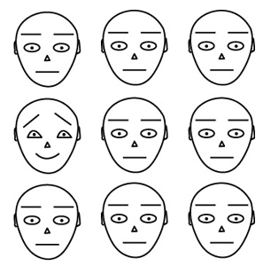

EIM09
Emocje a procesy poznawcze, cz. 1
Krzysztof Basiński
Emocje a procesy poznawcze
- Jakie są związki między jednym a drugim?
- Co jest “pierwotne” a co “wtórne”?
- Czy na pewno emocje i procesy poznawcze to dwie różne rzeczy?
Emocje są pierwotne
- Kartezjusz, Zajonc
- Emocje są pierwotne, starsze ewolucyjnie, szybsze itd.
- Człowiek najpierw reaguje emocjonalnie, później analizuje poznawczo
Emocje są wtórne, poznanie jest pierwotne
- Człowiek analizuje i interpretuje otaczający go świat
- Emocje są skutkiem poznawczej oceny sytuacji
- Patrz - teorie oceny
Czy emocje i poznanie aż tak się różnią?
- Sporna kwestia
- Brak precyzyjnej definicji emocji, proc. poznawczych
- Zgoda co do tego, że emocje i poznanie wpływają na siebie
- Coraz więcej badaczy dostrzega, że być może to to samo (PP)
Andy Clark, PP
- Emotions tied to first place inextricably mixed with stuff a bit like belief (cognition)
Prymat emocji? Poznania?
- W PP emocje są skutkiem predykcji na temat przyszłego stanu, wykształconymi przez ekstero/interocepcję
- Emocje = tendencja do działania (action tendency)
- W tym sensie wszystko jest powiązane (co rozwiązuje wiele problemów!) a rozgraniczenie na emocje i poznanie traci sens
Emocje a uwaga
- Obiekty ważne emocjonalnie przyciągają uwagę
- Np. automatycznie rozpoznajemy w tłumie osoby, które:
- bardzo lubimy
- bardzo nie lubimy
Zagrożenie a uwaga
- Obiekty zagrażające najlepiej przyciągają uwagę
- Szybciej wykrywamy węża pośród kwiatów niż kwiat pośród węży (Öhman, Flykt, & Esteves, 2001)
- Fundamentalna rola ewolucyjna (LeDoux)
Ohman et al., 2001

Ohman et al., 2001

Stres a uwaga
- Powoduje globalne zmiany w organizmie – aktywność współczulna, wydzielanie adrenaliny, kortykosteroidów itd.
- Te zmiany oddziałują na neuroprzekaźnictwo – istotne konsekwencje dla procesów psychicznych
- Przystosowanie ewolucyjne – reakcja walki-ucieczki
Dwa tryby działania uwagi
- Zorientowany na zadanie (PFC)
- Sensoryczno-czujnościowy (ciało migdałowate)
- W ostrym stresie uwaga przełącza się w tryb sensoryczno-czujnościowy
Tryb sensoryczno-czujnościowy – konsekwencje percepcyjne
- Zwiększenie czujności (Schackman et al., 2011, J Neurosci)
- Łatwiejsze dostrzeganie kontrastów (Phelps et al., 2006, Psychol Sci)
- Ekspresja strachu zwiększa pole widzenia, szybkość ruchu gałek ocznych, ilość wdychanego powietrza (Susskind et al., 2008, Nat Neurosci)
- Poszukiwanie zagrożeń
Tryb sensoryczno-czujnościowy – konsekwencje
- Pogorszenie wykonywania zadań wymagających kontroli uwagi
- Pogorszenie wykonywania zadań wymagających planowania
- Podatność na dystraktory
- Wynika z ograniczonej ilości zasobów uwagi
Vine et al. 2016

Emocje a pamięć
Pamięć
- Proces…
- …aktywny…
- …silnie uwarunkowany emocjonalnie.
Pamięć zdarzeń emocjonalnych
- Zdarzenia nacechowane emocjonalnie pamiętamy lepiej
- Lepiej pamiętamy motocykl, który wziął udział w wypadku drogowym niż jakiś motocykl
- Lepiej pamiętamy motocykl, który wziął udział w wypadku drogowym niż nieistotne szczegóły z drugiego planu tego zdarzenia
Pamięć zdarzeń pozytywnych i negatywnych
- Generalnie lepiej pamiętamy zdarzenia negatywne (z reguły są bardziej istotne)
- Możliwe wyjaśnienia:
- Lepiej pamiętamy zdarzenia o negatywnej walencji
- Lepiej pamiętamy zdarzenia związane z wysokim pobudzeniem (które jest częściej wysokie przy zdarzeniach negatywnych)
- Niejasne jest, czy chodzi tylko o emocje związane z wydarzeniem, czy też emocje pojawiające się “przy okazji”
Nastrój a pamięć
- Pamięć zgodna z nastrojem (mood-congruent memory)
- Pamięć zależna od nastroju (mood-state-dependend memory)
Pamięć zgodna z nastrojem
- Gdy jesteś w podłym nastroju, lepiej przypominasz sobie negatywne zdarzenia
- Gdy jesteś w dobrym nastroju, lepiej przypominasz sobie pozytywne zdarzenia
Homofony (Halberstadt, Niedenthal, Kushner, 1995)
- Wesołe:
- Bridal - bridle
- Dear - deer
- Heal - heel
- Peace - piece
- Smutne:
- Bored - board
- Die - dye
- Mourning - morning
Homofony (Halberstadt, Niedenthal, Kushner, 1995)
- Indukcja pozytywnych emocji powodowała, że badani częściej słyszeli “wesołe” słowa
- Indukcja negatywnych emocji powodowała, że badani częściej słyszeli “smutne” słowa
Pamięć zależna od nastroju
- Będąc w określonym stanie emocjonalnym, łatwiej przypominamy sobie informacje zapamiętane w tym stanie emocjonalnym
- Jeśli jesteśmy smutni, łatwiej przypomnimy sobie informacje zapamiętane gdy byliśmy smutni itd.
Ocenianie i podejmowanie decyzji
Oceny spójne z nastrojem (mood-congruent judgements)
- Niektóre czynności są nieprzyjemne gdy jest ci smutno a ekscytujące gdy jesteś wesoły
- Indukcja depresyjnego nastroju powoduje, że ludzie przeceniają prawdopodobieństwo wystąpienia negatywnych zdarzeń (katastrofy, klęski żywiołowe, przemoc)
- Indukcja pozytywnego nastroju powoduje przeciwny efekt (Johnson i Tversky, 1983)
Oceny spójne z nastrojem (mood-congruent judgements)
- Działa nie tylko nastrój ale i specyficzne emocje
- Indukcja smutku zwiększa ocenę prawdopodobieństwa smutnych zdarzeń, indukcja gniewu “gniewnych” zdarzeń (DeSteno et al., 2000)
Podejmowanie decyzji
- Gdy ludzie wybierają spośród alternatyw, starają się zważyć potencjalne korzyści z każdego wyboru
- Emocje towarzyszące wyborowi wpływają na tą ocenę (“jak będziesz się czuł, jeśli wybierzesz cośtam…”)
Somatic marker hypothesis (Damasio, 1994)
- W trakcie podejmowania decyzji, ludzie wykonują “ucieleśnione symulacje” możliwych ewentualności
- Te symulacje stanowią podstawę podejmowania decyzji (świadomie lub nieświadomie)
- Badanie Bechara et al. 1996 - W trakcie gry karcianej badani wybierali karty z czterech talii. Dwie były korzystniejsze, dwie mniej korzystne
- Specyficzne pobudzenie fizjologiczne zanim badani świadomie zaczęli odróżniać korzystne i niekorzystne talie
Emocje a skłonność do ryzyka
- Szczęśliwi ludzie mają mniejszą skłonność do zachowań ryzykownych
- Szczęście jest status quo, które należy zachowywać (Nygren et al., 1996)
- Nie ma badań pokazujących, że ludzie nieszczęśliwi bardziej ryzykują